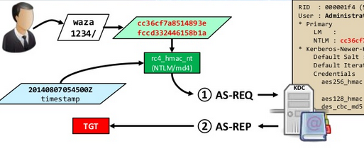

The KDC will validate the authentication if it can decrypt the timestamp with the long-term user key (for RC4, the NTLM hash of the user password)
It uses TGT representing the user in the domain, for a specified period
